Circuit Models of Many Body Quantum Dynamics
[earlier work with Sarang Gopalakrishnan]
University of Cambridge
September 16, 2019
Questions?
Physics question:
- How does time evolution couple independent subsystems?
Mathematical question:
How does many-body unitary evolution cause deviation from an initial product state?
[Unitary normally has structure e.g. from local Hamiltonian]
Unitary Circuits
- Unitary transformation composed of unitaries on subsets.
- Introduced as model of quantum computation.
Many Body States = Tensors
- State of a single spin-1/2 \(\psi_{s}\) \(s=\uparrow,\downarrow\).
- State of two spins \(\Psi_{s_1 s_2}\).
- Product states \(\Psi_{s_1s_2}=\psi^{(1)}_{s_1}\psi^{(2)}_{s_2}\) are special case.
- State of \(N\) spins \(\Psi_{s_1s_2\cdots s_N}\) is rank \(N\) tensor.
- \(2^N\) components: “curse of dimensionality”.
Notation: Tensor Digrams
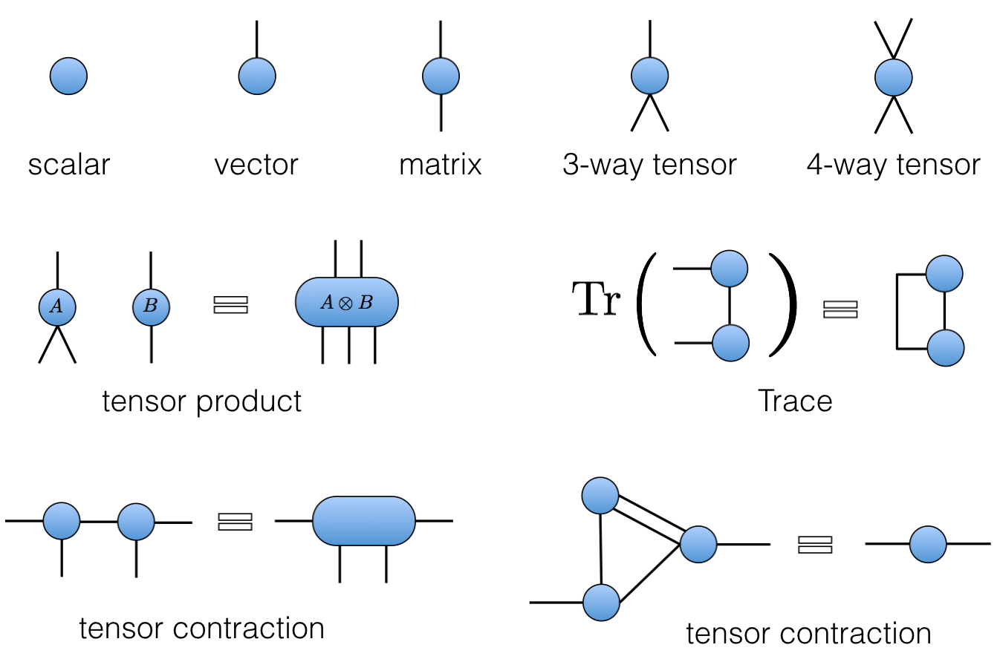
Not (Just) Pictures
- Every diagram corresponds to a unique expression
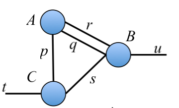
\[ \sum_{p,q,r,s} A_{pqr} B_{rqsu} C_{pts} \]
Brick Pattern Circuits
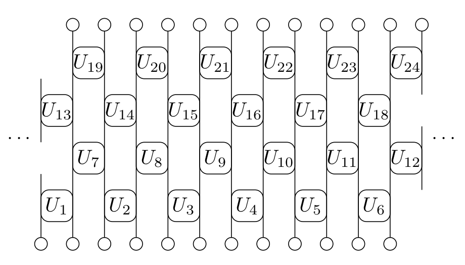
- Some notion of locality built in!
- Gates operate on neighbouring pairs, triplets, etc.
- [Often] start from product state \(\Psi_{s_1,s_2,\ldots s_N}=\psi_{s_1}\psi_{s_2}\cdots \psi_{s_N}\)
Model for Hamiltonian Dynamics
- Interested in \(U(t)|\psi_0\rangle\) with \(U(t) = e^{-iHt}\), where (say)
\[ H = \sum_j \mathbf{s}_j\cdot \mathbf{s}_{j+1} \]
- For small \(t\) can approximate \(U(t)\sim U_1(t)U_2(t)\) with \(U_{a}=e^{-iH_a t}\)
\[ H_1 = \sum_j \mathbf{s}_{2j}\cdot \mathbf{s}_{2j+1},\qquad H_2 = \sum_j \mathbf{s}_{2j}\cdot \mathbf{s}_{2j-1} \]
- Time evolution for \(T=Nt\) is approximately
\[ U(T)\sim \left[U_1(t)U_2(t)\right]^N \]
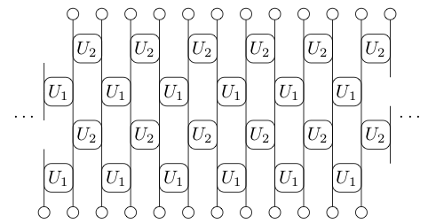
Another Example: Kicked Ising Model
- Time dependent Hamiltonian with kicks at \(t=0,1,2,\ldots\).
\[ \begin{aligned} H_{\text{KIM}}(t) = H_\text{I}[\mathbf{h}] + \sum_{m}\delta(t-n)H_\text{K}\\ H_\text{I}[\mathbf{h}]=\sum_{j=1}^L\left[J Z_j Z_{j+1} + h_j Z_j\right],\qquad H_\text{K} &= b\sum_{j=1}^L X_j, \end{aligned} \]
- “Stroboscopic” form of \(U(t)=\mathcal{T}\exp\left[-i\int^t H_{\text{KIM}}(t') dt'\right]\)
\[ \begin{aligned} U(n_+) = \left[U(1_+)\right]^n,\qquad U(1_-) = K I_\mathbf{h}\\ I_\mathbf{h} = e^{-iH_\text{I}[\mathbf{h}]}, \qquad K &= e^{-iH_\text{K}}, \end{aligned} \]
KIM as a Unitary Circuit
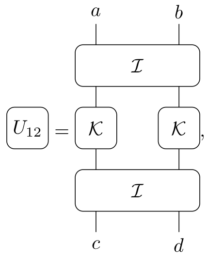
\[ \begin{aligned} \mathcal{K} &= \exp\left[-i b X\right]\\ \mathcal{I} &= \exp\left[-iJ Z_1 Z_2 -i \left(h_1 Z_1 + h_2 Z_2\right)/2\right]. \end{aligned} \]
Generally
Static disorder, or fully random
Floquet
Motivation: “general” quantum dynamics (no Hamiltonian) with only constraint of locality.
Unitarity
- Has the graphical representation
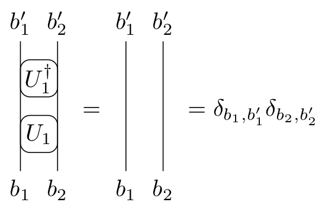
(Infinite Temperature) Correlation Functions
\[ \begin{aligned} C(x,y,t)=\mathop{\text{tr}}\left[O(x,t)O(y,0)\right]\\ O(x,t) = U(t)^\dagger O(x) U(t) \end{aligned} \]
- Keep track of \(U\) and \(U^\dagger\)
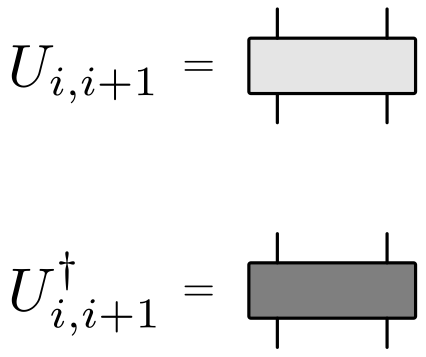
Graphical Representation
[Chan, De Luca, Chalker (2018)]
\[ C(x,y,t)=\mathop{\text{tr}}\left[U(t)^\dagger O(x)U(t) O(y)\right] \]
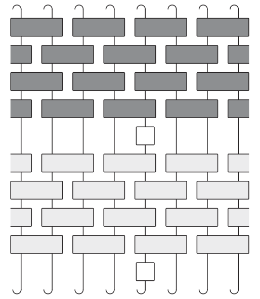
Using Unitarity
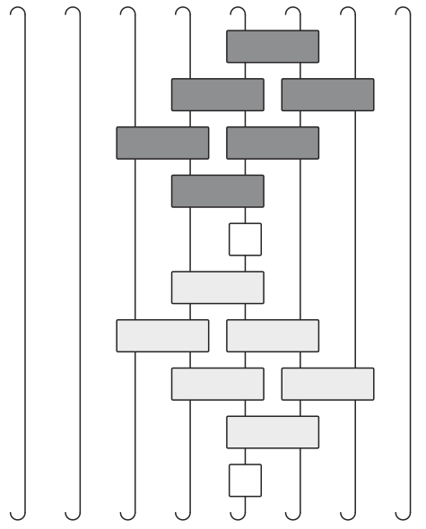
“Folded” picture
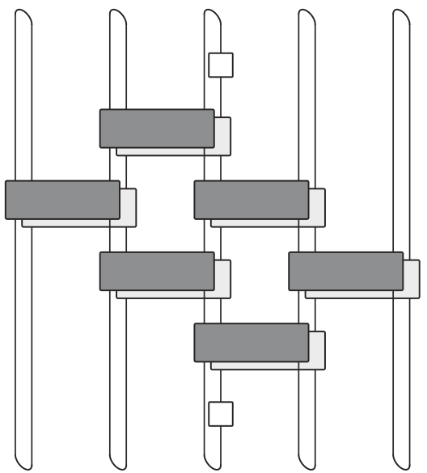
- Later point must be in “future light cone” of earlier
On the Light Cone
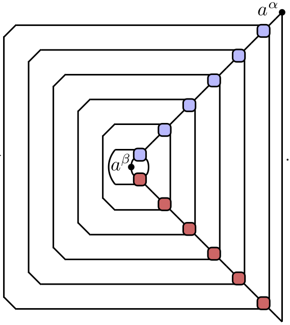
[Bertini, Kos, Prosen (2019)] for special models (see later)
In fact consequence of unitarity only
Light Cone Quantum Channel
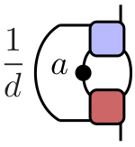
\[ \begin{align} C_\nu^{\alpha\beta}(\nu t,t) = \frac{1}{d} {\rm tr}\left[\mathcal M_{\nu}^{2t}(a^\beta)a^\alpha\right]\\ \mathcal M_{+}(a) = \frac{1}{d} {\rm tr}_1\left[U^\dagger (a\otimes\mathbb{1}) U\right] \end{align} \]
- Unitarity means map is trace preserving, completely positive and unital (identity is fixed point)
Dual Unitarity
[Gopalakrishnan & Lamacraft (2019)]
- Arises when the reshuffled unitary \(\tilde U\) is unitary too
$$ (\tilde U)_{ab,cd}=(U)_{ac,bd} $$
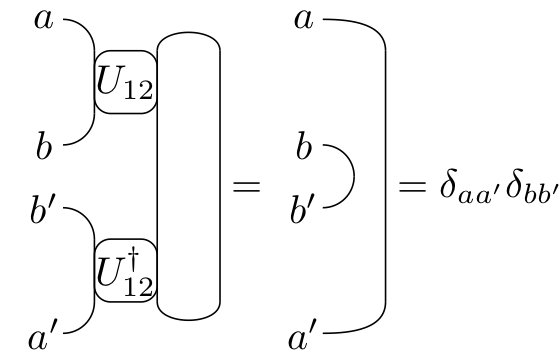
- 14 parameters for qubits! [Bertini, Kos, Prosen (2019)]
Example: Self Dual Kicked Ising
\[ \begin{aligned} \mathcal{K} &= \exp\left[-i b X\right]\\ \mathcal{I} &= \exp\left[-iJ Z_1 Z_2 -i \left(h_1 Z_1 + h_2 Z_2\right)/2\right]. \end{aligned} \]
- \(\tilde U\) unitary (“self dual”) for \(|J|=|b|=\frac{\pi}{4}\)
Folded Notation
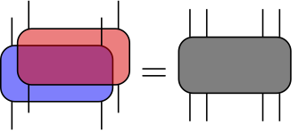
- Unitarity and dual unitarity
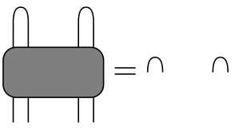
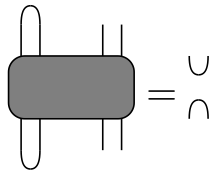
Correlations on Light Cone Only
[Bertini, Kos, Prosen (2019)]
- Proof by words:
- Unitarity fixes correlations to lie in “past” or “future”
- Dual unitarity fiex correlations to be outside the light cone
- Therefore: only nonzero on light cone
Reduced Density Matrix
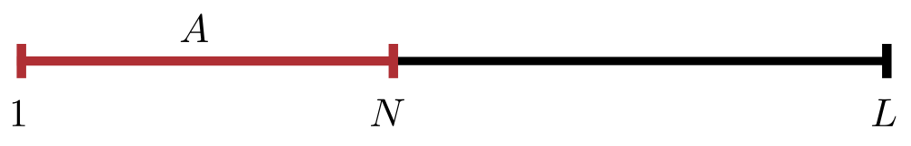
\[ \rho^{(A)}_{s_1\cdots s_N,s_1'\cdots s'_{N}} = \sum_{s_{N+1}\cdots s_L} \Psi_{s_1\cdots s_N s_{N+1}\cdots s_L}\bar \Psi_{s'_1\cdots s'_{N}s_{N+1}\cdots s_{L}} \]
- Everything we want is contained in \(\rho^{(A)}\)!
Measures of Entanglement
- Since \(\text{tr}\left[|\Psi\rangle\langle\Psi|\right]^2=1\) define purity
\[ \gamma = \text{tr}\left[\rho_A^2\right] \]
- (von Neumann) Entanglement entropy
\[ S = -\text{tr}\left[\rho_A \log \rho_A\right] \]
- Rényi entropies
\[ S^{(n)}_A = \frac{1}{1-n}\log \text{tr}\left[\rho^n\right] \]
- \(S^{(n)}\to S\) as \(n\to 1\) and \(S^{(2)} = -\log\gamma\)
Entanglement Spectrum
- Rényi entropies depend on eigenvalues of RDM
\[ S^{(n)}_A = \frac{1}{1-n}\sum_\alpha \lambda_\alpha^n \]
- \(\epsilon_\alpha = -\log \lambda_\alpha\) known as entanglement spectrum.
Graphical Representation of \(\rho^{(A)}\)
Entanglement Growth for Self-Dual KIM
[Bertini, Kos, Prosen (2018)]
\[ \lim_{L\to\infty} S^{(n)}_A(t) =\min(2t-2,N)\log 2, \]
- Any \(h_j\); inital \(Z_j\) product state

Entanglement alla [Calabrese & Cardy (2005)]
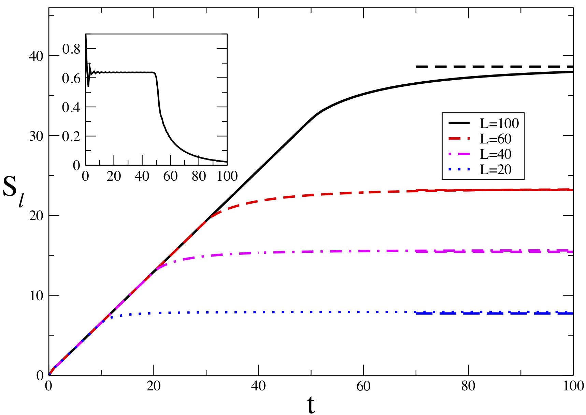
Quasiparticle Picture

Other Directions
- “Static” disorder or full randomness
- Projective Measurements
- Conserved quantities
- Classical circuits [Krajnik & Prosen (2019)]